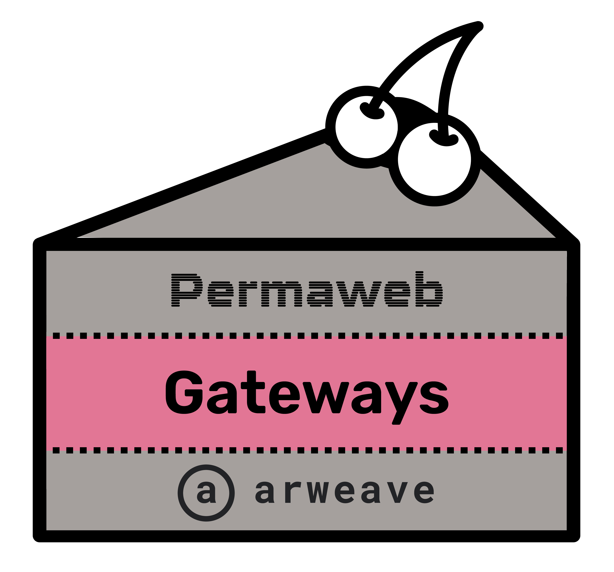

Guarding the Gates: Content Moderation and the Future of Decentralized Gateways on Arweave
by @JonnieSparkles
Originally published: 2023-05-18
Introduction
Arweave, a decentralized and permissionless data storage protocol, makes permanent data storage possible for the first time in human history. However, the dynamics of accessing this stored data can be nuanced. This article, following our discussion on Censorship and Content Moderation, presents an example of how content moderation can impact gateway operations and data access on Arweave. We'll share our insights, provide some suggestions, and show how the upcoming AR.IO Network fits into this landscape.
What are Gateways?
Gateways form the middle layer of The Permanence Pie, acting as vital utilities that bridge the base Arweave storage layer with user interactions on the permaweb.

Gateways are independently operated and play a crucial role in the data management process. They are responsible for retrieving, caching, and serving data. Additionally, they index transactions to streamline large-scale queries. This function distinguishes them from Arweave mining nodes.
Arweave mining nodes, on the other hand, focus on securing the Layer-1 blockweave (storage layer) and ensuring data is replicated accurately across the network. They are not optimized (nor tasked with) performing the functions assigned to gateways.
In this context, gateways could be seen as 'permaweb nodes'. While both gateways and Arweave nodes contribute to the overall function of the network, their tasks and roles are distinct.
Gateways and Content Moderation
The most utilized permaweb node is arweave.net - this gateway is operated as a public good and serves the entirety of all data ever uploaded to Arweave. As stewards of arweave.net, our team is tasked with preserving its broad global access to the community. This involves complying with certain regulations relating to user actions, such as:
1. Responding to Digital Millennium Copyright Act (DMCA) takedown requests: When copyrighted content is uploaded to the network, we must address these requests. Failure to comply could lead to the de-listing of the arweave.net domain by its domain name provider.
2. Dealing with malicious data: This includes phishing attempts or viruses. The gateway is regularly scanned by numerous phishing and virus detection aggregators. Their threat assessment lists (some proprietary, some publicly disclosed) are used by ISPs and other software/infrastructure products to mitigate the spread of malicious content to their end users. ISPs sometimes use undisclosed lists or integrations, which can result in a complete restriction of access to certain domains, such as arweave.net, if any of the content scanned by these aggregators is deemed malicious. Some users may have already experienced this when trying to access arweave.net from certain ISPs.
3. Managing flagged content by our service providers: We must quickly respond to any requests or risk being de-platformed.
For each request, we must identify that the content is in-fact malicious then purge it from the gateway's caches and ensure that it is no longer served.
In many cases, the same wallet repeatedly posts malicious content. Once a wallet has been identified as a source of malicious content, it may be placed on a blocklist. This protection acts as a deterrent and helps keep the gateway clean and prevent phishing spam. When a wallet is on this list, while they can never be blocked from submitting data to the Arweave network, the arweave.net gateway will no longer forward transactions from that wallet to the network. This is true for single individual user wallets as well as wallets shared by all users across a platform.
The Example
Recently, there were a couple of independent situations where users from different platforms experienced unexpected issues due to the actions of a single user on each platform. These platforms utilized a single, common wallet (keyfile) for signing user data to be uploaded to Arweave, meaning one central wallet was used for all users on the platform. In this setup, many different parties used the platforms' single Arweave wallets to sign their data items.
Unfortunately, some individuals "poisoned" the data of everyone else by uploading copyrighted material. This led to a DMCA takedown request, which in turn resulted in the blocklisting of the common wallets. As a consequence, all data items associated with these wallets (i.e. the data items of all users) were affected.
This incident highlights the risks associated with using shared wallets, where one user's actions can negatively impact others.
Data Access Issues and Resolutions
In cases where data access is unintentionally blocked due to the misuse of others, resolving the issue requires a manual process that can be time-consuming and resource-intensive. While it's essential to be patient during the resolution process, users should be aware that no data is lost in these scenarios, only temporarily inaccessible.
While gateways play a key role in simplifying data retrieval, it's worth noting that Arweave is designed to function even without them. In situations where access is restricted, users have the option to directly retrieve data from Arweave miner nodes by searching the network, downloading data chunks, and assembling them into the desired file.
To address these challenges and ensure a more transparent and fair content moderation system, our team is actively reviewing steps to enhance the process and minimize unintentional blocks. In the meantime, we recommend the following practices to prevent future issues:
1. Use Separate Wallets: It's advisable to have separate wallets for each party involved. Shared wallets and digital identities can lead to complications, so providing each user with their own individual wallet ensures that any misdeeds or conflicts of one user do not impact the entire service. Users should also be aware of this when choosing an application to interact with. For instance, ArDrive.io uses a BYO-Wallet model that avoids this cross-contamination issue entirely.
3. Employ Nested Bundles: For advanced multi-party signatures, consider utilizing nested bundles. This approach allows users to sign their respective data items with their own wallets, bundle them together, and have each bundle signed by a separate party. This ensures security, accountability, and mitigates potential conflicts.
The Decentralized Solution
All of this may scream "centralized" and we'd agree because it is - despite everyone's best intentions, a single gateway operated by a single team is inherently susceptible to failure and manipulation.
That's why our team is diligently working on AR.IO - a decentralized and incentivized gateway network, purpose-built for Arweave.
Gateways (permaweb nodes) on the AR.IO Network will offer alternative ways to access content on the permaweb, providing an additional service layer on top of the Arweave network. Each gateway can maintain distinct blocklists that reflect the content moderation policies of the Arweave network and the specific region that the gateway operates from. Multiple gateways will enhance issue resolution, offer users more choices for data access, and improve resiliency through decentralization. More nodes? That's a recipe for a permanence party!
Conclusion
In the Arweave ecosystem, understanding the mechanics of data upload and access is essential for ensuring a positive user experience. By following the recommendations outlined in this article, developers, service providers, and users can mitigate potential issues that arise from malicious content and their associated moderation actions.
The AR.IO Network presents a decentralized solution to the access layer challenges experienced within the ecosystem, providing an opportunity to become an integral part of the permaweb. Operating a permaweb node on AR.IO is an easy way to contribute to the sustainable access of the permaweb and Arweave users worldwide while being rewarded for it. As a gateway operator, you have the chance to shape the future of decentralized storage, providing access for not just your own app or community, but the entire global ecosystem as well.
Get exclusive news and stay up to date on our progress (including early access to our white paper) by subscribing to our newsletter and following us on twitter. Join the AR.IO community today and be a part of shaping the future of the permaweb!